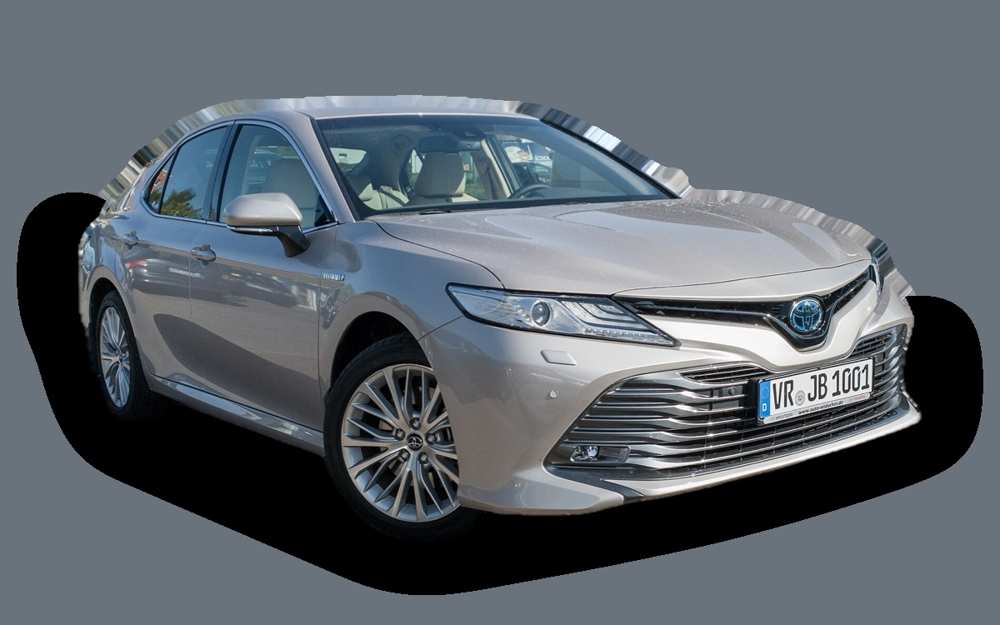

Vad kostar en Toyota Camry per månad?
En Toyota Camry från 2021 kostar cirka 2 612 kr i månaden, allt inräknat.
2 612 krper månad, årsmodell 2021
238 000 krpris, årsmodell 2021
380 900 krsenaste nypris
Aprisvärdhetsbetyg (2021)

.jpg){kind=link}
Månadskostnad per årsmodell
| Årsmodell | Version i beräkningen | Pris | Per månad | Betyg |
|---|---|---|---|---|
| 2024 | Hybrid 230, Active | 304 000 kr | 2 702 kr | A |
| 2021 | Hybrid 230, Active | 238 000 kr | 2 612 kr | A |
Räknat på 5 års ägande och 1 250 mil per år, med bränslepriser från 2026-10-22. Månadskostnaden innehåller värdeminskning, drivmedel, service och reparationer, försäkring och fordonsskatt.
Så fördelas kostnaden för en 2021:a
- Värdeminskning: 746 kr/mån
- Drivmedel: 948 kr/mån
- Service och reparationer: 390 kr/mån
- Försäkring: 498 kr/mån
- Fordonsskatt: 30 kr/mån
Begagnatpriser i annonser
| Årsmodell | Medianpris | Annonser | Typiskt miltal |
|---|---|---|---|
| 2024 | 304 900 kr | 8 | 8 600 mil |
| 2023 | 299 200 kr | 5 | 9 200 mil |
| 2022 | 279 900 kr | 6 | 10 300 mil |
| 2021 | 239 300 kr | 8 | 13 100 mil |
| 2020 | 264 900 kr | 4 | 13 600 mil |
| 2019 | 257 100 kr | 4 | 14 500 mil |
Medianpriset i svenska annonser per årsmodell i oktober 2026 (källa: AutoUncle, BilKoll). Annonspriser är utgångspriser, och slutpriset kan bli lägre.
Motorer och versioner
| Motor | Drivmedel | Effekt | 0–100 km/h | Förbrukning (WLTP) | Räckvidd | Årsmodeller | Pristillägg |
|---|---|---|---|---|---|---|---|
| Hybrid 230 | Hybrid | 230 hk | 8,3 s | 4,4 l/100 km | – | 2019–2024 | – |
| Hybrid 233 AWD-i | Hybrid | 233 hk | 8 s | 4,8 l/100 km | – | 2019–2024 | +30 000 kr |
- Utrustning: Active, Style (+30 000 kr), Executive (+21 100 kr)
Fakta
- Kaross
- Sedan
- Årsmodeller
- 2019–2024
- Senaste nypris
- 380 900 kr
- Bagage
- 500 liter
- Euro NCAP
- 5 av 5 stjärnor
- Nybilsgaranti
- 10 år
- Driftsäkerhet
- 5 av 5
- Helförsäkring, uppskattning
- 7 100 kr/år
- Service, uppskattning
- 3 800 kr/år
Vanliga fel att ha koll på
- Elektrisk vattenpump (hybrid), reparation cirka 6 000 kr
- Hybridbatteriet tappar celler, reparation cirka 25 000 kr
- Rost på broms- och bränsleledningar, reparation cirka 5 500 kr
Felen gäller vissa motorer och årsmodeller. I kalkylatorn räknas risken för just den version du väljer.
Fördelar och nackdelar
Fördel
Snål stor sedan med lång garanti.
Nackdel
Inte särskilt rolig att köra.
Liknande bilar
 Polestar 23 008 kr/mån som 2023:a
Polestar 23 008 kr/mån som 2023:a Volvo S403 180 kr/mån som 2009:a
Volvo S403 180 kr/mån som 2009:a Saab 9-3 Sport Sedan3 606 kr/mån som 2008:a
Saab 9-3 Sport Sedan3 606 kr/mån som 2008:a Volkswagen Arteon3 655 kr/mån som 2021:a
Volkswagen Arteon3 655 kr/mån som 2021:a Volvo S60 II3 671 kr/mån som 2015:a
Volvo S60 II3 671 kr/mån som 2015:a Tesla Model 33 698 kr/mån som 2023:a
Tesla Model 33 698 kr/mån som 2023:a
Uppdaterad 2026-10-28 · annonsdata okt 2026